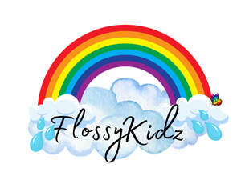

Trade Mark Journal No.2025/026 27 June 2025
UK00004218267 12 June 2025 (16,28,39)

- Class 16
- Gift books; Gift cards; Gift bags; Gift certificates; Gift boxes; Gift vouchers; Christmas gift wrap; Gift wrap cards; Birthday books; Children's books; Gift cartons; Children's storybooks; Gift cases for writing instruments; Books for children; Gift tags; Paper gift bags; Christmas cards; Decorative pencil-top ornaments; Paper gift boxes; Gift packaging; Birthday cards; Children's activity books; Gift paper; Paper wine gift bags; Gift wrap; Paper gift wrap bows; Paper bows for gift wrap; Baby books [storybooks]; Stationery and educational supplies; Baby books; Musical greetings cards; Paper gift tags; Holiday cards; Gift wrapping paper; Cardboard gift boxes; Gift boxes made of cardboard; Paper gift wrapping ribbons; Pencil ornaments [stationery]; Pencil ornaments (stationery); Gift wrapping foil; Occasion cards.
- Class 28
- Children's toys; Children's playthings; Costumes being children's playthings; Ornaments for Christmas trees, except illumination articles and confectionery; Christmas trees (Ornaments for -), except illumination articles and confectionery; Children's multiple activity toys; Toys incorporating money boxes; Decorations and ornaments for Christmas trees; Party favors in the nature of small toys; Costumes being childrens playthings; Christmas tree decorations and ornaments; Toys for babies; Ornaments for Christmas trees, except lights, candles and confectionery; Novelty toys for parties; Ornaments for Christmas trees; Christmas dolls; Money guns being toys; Non-edible christmas tree ornaments; Musical Christmas tree ornaments; Festive decorations, party novelties and artificial Christmas trees; Educational toys; Articles of clothing for toys; Electronic games for the teaching of children; Tricycles for children for use as playthings; Decorations for Christmas trees; Toys and playthings for pets; Toys for infants; Multiple activity toys for babies; Children's multiple activity tables [playthings]; Christmas tree ornaments.
- Class 39
- Arranging the delivery of gifts; Gift wrapping; Delivery of gift baskets with selected items regarding a particular occasion or theme; Gift delivery.
Victoria Pipes